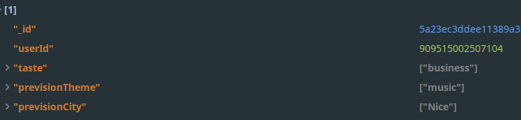

Problèmes
Nous avons rencontrés différents problèmes durant le dévelloppement de notre Bot.
Le déploiement du serveur
Problème
Pour que notre Bot marche, Facebook nous a demandé d'avoir notre propre serveur, un nom de domaine, et un certificat SSL pour le HTTPS
Solution
Nous avons du acheter un nom de domaine (namecheap), louer un serveur VPS (digitalocean)
Nous avons ensuite utilisé letsencrypt pour générer les certificats SSL, Nginx en tant que reverse proxy et datadog en tant que monitoring
Récupération des gouts de l'utilisateur
Problème
Notre bot devait aller récupérer sur les réseaux sociaux les gouts de l'utilisateur et ainsi déterminer ses centres d'interet.
Pour avoir accès a cette fonctionnalité, nous n'avions qu'a demander a Facebook
Seul problème, pour avois accès a ces infos il faut demander a Facebook de 'review' notre application et nous donner son feu vert.
Malheureusement pour cela, il faut déjà avoir une application fonctionnelle, ce que nous n'avions pas 2 semaines (temps de la review) avant le rendu.
Solution
Nous avons donc crée un menu pour demander a l'utilisateur de rentrer manuellement ses gouts. De plus, nous mémorisons les recherches de l'utilisateur afin de par la suite pouvoir déterminer ses gouts 
Api de recherche d'image extrèmement lente
Problème
L'api de recherche d'évènements nous retourne le titre de l'évènement.
Nous voulions aussi en afficher une image a l'utilisateur
Au début nous utilisions Google Image qui s'est avéré bien trop long par la suite
Solution
Nous sommes passés sur Qwant qui offre une api bien plus rapide et plus simple. Ce n'est malheureusement pas une solution viable car au bout de ~1000 requetes / jour nous sommes stoppés pendant 24h